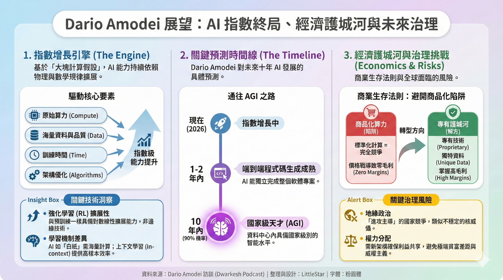

AI 指數級成長、市場分析與未來展望

TL;DR：
- Dario 在「Dwarkesh Podcast」受訪時，表示在未來十年內很有可能出現「資料中心中的國家級天才」（90%），主要推動力仍是大規模的計算與資料。
- 強化學習與預訓練在可擴展性上具有相似的對數線性關係；商業面則需靠專有技術（proprietary）維持高毛利。
- 核心關切為治理、安全與全球利益分配，市場趨向完全競爭會侵蝕毛利，差異化（專有技術/數據）是關鍵。
Top Takeaways
- Dario 支持「大塊計算假設」：計算、資料與訓練時間仍是能力提升的主軸。
- 他給出 90% 機率：十年內出現資料中心級別的強大智能。
- 程式碼領域已顯示高樣本效率；端到端程式碼可望在 1–2 年實現。
- 強化學習（RL）與預訓練均呈可擴展性，非邊緣議題。
- AI 商業化挑戰在於 Compute 商品化後的零邊際風險。
- Proprietary 技術與特殊數據是維持毛利的關鍵護城河。
- 治理、法律與地緣政治風險需同步投入以避免濫用與不平等。
- 建議企業平衡擴張與獲利，並投資提升訓練/推理效率。
日期： 2026年2月14日 與會專家團隊： 👨🏫 講師 | 👨🎓 學習者 | ✍️ 技術文案 | 📈 分析師 | 🎯 領域專家
1. 摘要
本次訪談（Dario Amodei 訪談）及後續討論，聚焦於 AI 技術過去三年的指數級成長，對其本質、學習機制、通用人工智能 (AGI) 的潛在實現，以及 AI 廣泛的經濟滲透與治理議題。同時，也深入探討了 AI 計算市場的經濟學模型、競爭結構、關鍵術語的定義與關聯，旨在建立一個全面、結構化的理解框架。
2. AI 的指數級成長與擴展性
2.1. 過去三年進展與核心假設
- AI 底層技術在過去三年呈現指數級成長，尤其在程式碼 (code) 發展方面符合預期。Dario Amodei 再次確認了他於 2017 年提出的「大塊計算假設」(Scaling Hypothesis)，強調 AI 的進步依然依賴於持續擴大的計算資源。
- 「大塊計算假設」的核心要素包括：
- 原始計算能力 (raw compute)
- 數據的數量 (data quantity)
- 數據的品質和分佈 (data quality and distribution)
- 訓練時間 (training time)
- 可擴展的目標函數 (objective function that scales to the moon)，包括預訓練和強化學習 (RL) 的目標函數。
- 歸一化/條件化 (normalization/conditioning)，用於確保數值穩定性。
- 模型架構與演算法改進 (model architectures & algorithmic improvements)：包括網路架構設計、優化器、稀疏或混合精度技術、正則化、以及軟硬體協同設計等，這些改進能提高樣本效率與計算效率，顯著影響可擴展性與成本效益。 (說明：原文並未以明確條列表示第 7 項，但在討論中暗指架構與演算法優化、以及系統層面（軟硬體協同）對於擴展性與數值穩定性的關鍵性。)
2.2. 學習機制與樣本效率的差異
- AI 與人類學習的本質區別: AI 缺乏人類的「先驗知識」，更像是「白紙」，需要海量數據和計算來學習；而人類學習是進化、長期學習、短期學習及即時學習的綜合體。
- AI 的學習階段類比:
- 進化: 類比為 AI 的預訓練 (pre-training) 階段，涉及大量數據。
- 長期學習: 類比為強化學習 (RL)，透過學習模型技能或進行元學習。
- 短期學習: 類比為上下文學習 (in-context learning)，Dario 認為這是一種「超級樣本效率」的代理，被視為介於長期人類學習和短期人類學習之間。
- 即時學習 (Real-time learning): Human learning is a mix of evolution, long-term learning, short-term learning, and real-time learning.
- 樣本效率的挑戰: AI 顯著比人類需要更多的數據和計算來完成任務。
- 持續學習 (Continual Learning): Dario 認為這可能不是一個根本性的障礙，預訓練和 RL 的泛化能力已經足夠強大。然而，Anthropic 也在積極致力於此。
- 程式碼領域的進展: 程式碼庫扮演了「記憶支架」的角色，而上下文學習在程式碼領域展現了顯著優勢。
2.3. 強化學習 (RL) 的擴展性
- Dario Amodei 認為，RL 的擴展與預訓練的擴展一樣有效。兩者都遵循對數線性關係，並非「紅鰲」(red herring)，即並非無關緊要的次要議題。
3. 通用人工智能 (AGI) 預測與時間線
- AGI 實現概率: Dario 預計有 90% 的概率在十年內實現「數據中心裡的國家級天才」(state-level of intelligence in a data center)。
- 端到端程式碼 (End-to-end coding): 預計在 1-2 年內即可完全實現。
- 不可驗證任務: 科學發現、寫小說等任務存在不確定性，但路徑是可靠的。
4. 經濟影響、商業模式與市場分析
4.1. AI 經濟滲透與生產力提升
- 滲透速度: AI 的經濟滲透是快速的，但並非無限快，受到實際部署、變革管理、安全合規等因素的影響。
- 生產力提升: AI 工具（如 Claude Code）已帶來顯著的生產力提升，程式碼貢獻比例顯著增加。
- TAM (Total Addressable Market): 總潛在市場的定義和評估至關重要，它代表了一個產品或服務能觸及的最大市場範圍，是評估商業潛力的首要指標。
- Market Share (市場份額): 在 TAM 範圍內，某公司實際佔有的市場比例，是競爭力的體現。
4.2. AI 計算市場的經濟學分析
-
核心術語與關聯:
- Compute (計算能力): AI 訓練和推理的基礎，泛指進行各種運算所需的處理能力，通常指 GPU、TPU 等專用硬體。
- Training (訓練): 利用大量數據來訓練 AI 模型，計算需求最為旺盛。
- Inference (推理): 訓練完成的 AI 模型對新數據進行預測或判斷，對延遲和效率要求較高。
- Gross Margin (毛利率): 收入減去銷貨成本後的利潤比例，是衡量盈利能力的核心指標。
- Perfect Competition (完全競爭): 理論上，眾多買家賣家，商品同質，利潤趨近於零的市場結構。
- Cournot Equilibrium (科諾均衡): 寡頭壟斷模型中的均衡狀態，企業同時決定產量，假設其他企業產量不變。
- Zero Margins (零邊際): 在極致競爭市場中，價格被壓至平均成本水平，導致利潤為零。
- Proprietary (專有的): 指獨有的、受保護的技術、方法或產品，是建立競爭優勢的關鍵。
-
市場結構與競爭動態:
- AI 計算市場（尤其是標準化的訓練/推理算力）易趨向完全競爭，可能導致零邊際的出現。
- 在主要供應商（如大型雲服務商、GPU 製造商）之間，更接近於寡頭壟斷，Cournot Equilibrium 模型可用于分析其產量和價格的博弈。
- Proprietary 技術是企業在激烈競爭中突圍、避免被商品化、維持高毛利率的關鍵。
-
常見陷阱:
- 過度依賴標準化 Compute 供應，忽略 Proprietary 解決方案的差異化價值。
- 低估 Inference 的長期價值和成本。
- 誤判市場結構，將高度差異化的市場套入 Perfect Competition 模型。
- 為了獲取 Market Share 而過度降價，侵蝕 Gross Margin。
4.3. Anthropic 的收入預測與商業模式
- 收入預測:
- 2023 年: 0 到 1 億美元
- 2024 年: 1 億到 10 億美元
- 2025 年: 10 億到 90-100 億美元
- 商業模式:
- API 模型將持續存在，提供創新的機會。
- 將出現「按結果付費」、「按小時補償」等新模式。
- Claude Code 的成功源於 Anthropic 自身對程式碼模型的深度應用和快速反饋循環。
- 計算能力購買: 決策基於對未來需求和技術進展的預測，存在購買過多或過少的風險。公司會將利潤重新投資於研發，追求更高的 AI 能力。
5. AI 的安全、治理與地緣政治
5.1. 關鍵風險
- 錯誤對齊的 AI: 潛在的失控風險，特別是當 AI 模型能夠自我製造時。
- 地緣政治競爭: AI 領域的國家間競爭可能導致進攻主導的世界，類似核威脅。
- 政府濫用: AI 可能被威權國家用於壓迫人民。
5.2. 治理架構與法律監管
- 短期: 需要安全措施、對齊工作、生物分類器，以及透明度標準。
- 長期: 需要新的治理架構，可能需要 AI 參與建立社會結構。
- 法律監管:
- 反對僵化的立法，支持聯邦標準和靈活監管。
- 強調對藥品監管流程的改革，以適應 AI 加速的發現速度。
5.3. AI 的價值分配與全球影響
- 核心關切: 利益的公平分配、政治自由，而非單純的經濟增長。
- 發展中國家的機會: 鼓勵在發展中國家建立數據中心，發展 AI 驅動的產業，並確保個人能夠獲得 AI 的好處。
- 威權主義與 AI: AGI 時代的威權主義可能更加嚴峻，但也存在政府形式變革的不確定性。
- AI 的滲透性: 擔憂 AI 的好處可能因國家而異，導致全球發展不平衡。
6. Anthropic 的文化與運營
- 文化建設: 強調公司使命、團隊合作、誠實溝通，以應對快速發展和大規模擴張。
- 領導力: Dario Amodei 透過 DVQ (Dario Vision Quest) 和 Slack 頻道，與全公司保持直接溝通，傳遞願景與戰略。
- 憲法 (Constitution): 採用基於原則的訓練方法，確保模型行為的一致性與可控性。憲法通過內部迭代、公司間競爭和社會反饋不斷完善。
7. 專家團隊綜合報告與決議
7.1. 核心主題歸納
本次分析由多位專家從不同視角匯總，清晰描繪了 AI 技術發展的現狀、潛力、挑戰，以及其在商業和經濟層面的深遠影響。核心討論點包括：
- AI 技術的指數級成長: 以「大塊計算假設」為基礎，持續推進 AI 能力的提升。
- AI 的學習機制: AI 與人類學習方式的顯著差異，以及對樣本效率的挑戰。
- AGI 的預測: 對未來實現國家級智能的時間線和具體表現的展望。
- AI 計算市場的經濟學分析:
- 市場定義與規模: TAM、Market Share 的評估。
- 技術基礎與成本: Compute (Training/Inference) 的投入與 Gross Margin 的關係。
- 競爭策略與市場結構: Proprietary 技術作為差異化手段，與 Perfect Competition 下的 Zero Margins 現象形成對比；Cournot Equilibrium 分析寡頭競爭。
- 安全、治理與倫理: AI 發展伴隨的風險，以及對治理架構和法律監管的需求。
- Anthropic 的戰略與文化: 公司發展方向、商業模式、收入預測及企業文化。
7.2. 專家團隊共識與洞察
- 高度關聯性: 術語們共同構成了理解當前 AI 產業，特別是大型模型和計算基礎設施領域商業模式的關鍵框架。
- 挑戰與機遇: 業界面臨巨大的技術投入和激烈的市場競爭。如何在保有 Proprietary 優勢的同時，管理 Compute 成本並維持健康的 Gross Margin，是成功的關鍵。
- 理論與實踐的交匯: 經濟學理論（如 Cournot Equilibrium, Perfect Competition）為分析 AI 產業市場動態和盈利模式提供了有力工具，但也需注意其與現實市場結構的差異（如技術壁壘、產品差異化）。
- 「Proprietary」的關鍵性: 在 AI 計算市場，單純提供 Compute 資源難以維持高 Gross Margin。企業必須依賴 Proprietary 的技術、優化能力和獨特解決方案，才能構建競爭壁壘，爭奪 Market Share，並擴大 TAM。
7.3. 決議與後續建議
- 深入研究 Proprietary 解決方案: 識別不同參與者的獨特技術、模型優化、數據集或行業應用，以及它們如何轉化為競爭優勢和利潤。
- 精準的市場分析: 結合具體數據，評估不同細分市場的 TAM 增長預期，並分析 Compute 成本、Training/Inference 定價與 Gross Margin 的關係。
- 風險管理與治理: 持續關注 AI 安全、對齊、治理和地緣政治的潛在風險，並參與相關討論和標準制定。
- 技術創新聚焦: 鼓勵持續投入於提升 Training 和 Inference 效率，或開發獨特的 Proprietary 模型/技術，以築牢競爭壁壘。
- 平衡市場份額與盈利能力: 策略上應平衡快速獲取 Market Share 與維持健康的 Gross Margin，避免陷入低利潤競爭。
8. Mermaid 圖表範例
8.1. AI 擴展性假設框架
graph LR
A["大塊計算假設"] --> B["計算能力"]
A --> C["數據數量"]
A --> D["數據品質與分佈"]
A --> E["訓練時間"]
A --> F["可擴展目標函數"]
A --> G["數值穩定性 / 歸一化"]
A --> H["模型架構與演算法改進"]
B --> B1["原始計算"]
F --> F1["預訓練目標"]
F --> F2["RL 目標"]
F2 --> F2a["客觀獎勵"]
F2 --> F2b["主觀獎勵 (RLHF)"]
H --> H1["架構、優化、軟硬體協同、稀疏/混合精度等"]
8.2. AI 學習機制類比
graph LR
A["AI 學習"] --> B["進化"]
A --> C["長期學習"]
A --> D["短期學習"]
A --> E["即時學習"]
B --> B1["預訓練（大量數據）"]
C --> C1["RL（技能學習）"]
D --> D1["上下文學習"]
E --> E1["人類回饋"]
F["人類學習"] --> G["進化"]
F --> H["長期學習"]
F --> I["短期學習"]
F --> J["即時學習"]
8.3. AI 經濟滲透模型
graph TD
A[AI 技術快速進展] --> B(指數級性能提升)
B --> C(快速但非無限的經濟滲透)
C --> D{現實部署挑戰}
D --> D1[變革管理]
D --> D2[安全合規審核]
D --> D3[法律程序]
D --> D4[企業採購流程]
C --> E(指數級收入增長)
8.4. AI 計算市場分析框架
graph TD
A[市場機會評估] --> B(TAM: 總潛在市場);
B --> C(Market Share: 市場份額);
D[技術與運營] --> E(Compute: 計算能力);
E --> F(Training: 模型訓練);
E --> G(Inference: 模型推理);
H[商業策略與績效] --> I(Proprietary: 專有技術/數據);
I --> J(Gross Margin: 毛利率);
J --> K(Zero Margins: 零邊際 - 極端情況);
L[市場結構與競爭] --> M(Perfect Competition: 完全競爭);
L --> N(Cournot Equilibrium: 科諾均衡 - 寡頭);
C --> J;
F --> J;
G --> J;
I --> C;
M --> K;
N --> J;